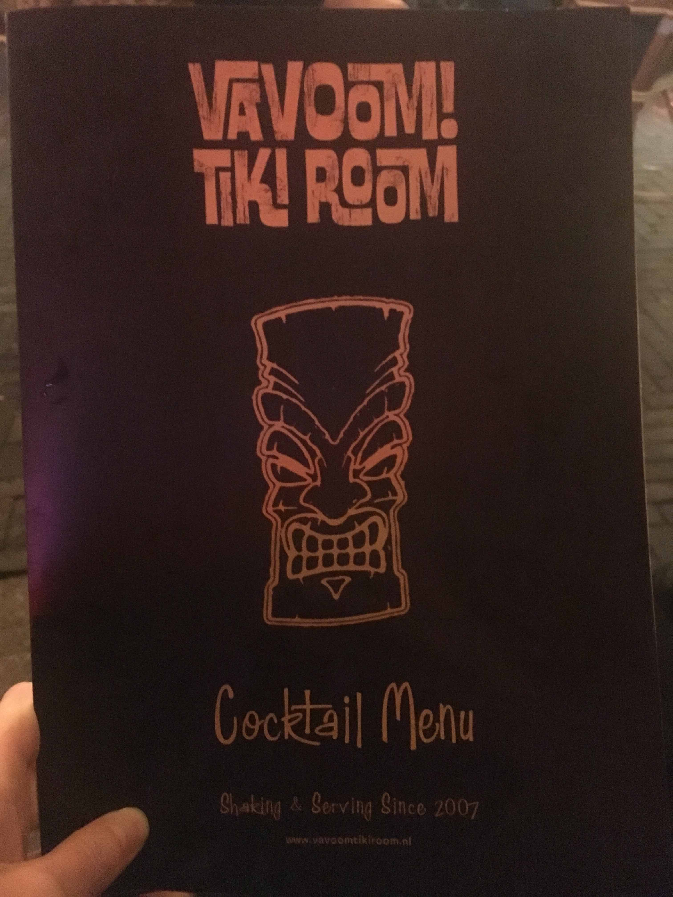

This thesis explores the production, erasure, and retrieval of cultural heritage, in the context of the Danish colonization of Greenland. Throughout history, mechanisms of worship and negation have been used to marginalize and demonize, and we discover that Christianity played a crucial role in the invasion of Greenland and the subsequent exploitation of the land and its people. I approach the tradition of Inuit storytelling, knowledge-production and spirituality to decenter euro- and anthropocentric perspectives which up until now have functioned to prevent Greenlandic sovereignty and survival. I propose the mermaid as a tool for critically engaging with the dominant narratives and giving voice to decolonial resistance.
Using diverse sources such as photographs, documentaries, archival documents, maps, film, literature, interviews, and social media posts I create qualitative research. Departing from the neighbourhood where I grew up, I examine colonial history through a feminist lens to understand decolonizing currents which exceed national borders.
The Little Mermaid and the Devil's Great Grandmother
POLICE inspecting The Little Mermaid Copenhagen after her first beheading in 1964. The perpetrators have still not been identified and the action remains a mystery.
The Little Mermaid in Denmark has had many visitors and travelled around the world, twice she has been decapitated, and yet she always comes back to life.1 Is it magic? Is it capitalism? Is it because she gained an immortal soul when she struck a deal with the evil sea-witch? Whenever an unsolved issue needs new attention, she is first to revive the discussions. Known to resist mainstream opinion, she often appears in scandalous outfits, with bold words or accessories, to challenge the Danish self-perception, or show solidarity with victims of oppression in other parts of the world. Having been assaulted and dismembered on several occasions, it seems this mermaid with nothing left to lose, has become a popular tool for igniting risky conversations on Danish territories.
TOURISTS posing in front of the Little Mermaid statue, even as she protests the whaling industry of the Faroe Islands.
SHIPS unloading goods at the Royal Greenland Dock in Christianshavn, Copenhagen.
FOUR Greenlandic men onboard of Dano-Norweigan expedition ship Gjøa in 1903.
This subversive goddess does not dissolve into foam on the waves and become a daughter of the air, and unlike the Little Mermaid she would never agree to get her tongue cut off, but was dismembered unwillingly. She releases sea animals for the hunters if people on land do not cross her, and angakkut 8 will risk their life to comb her long hair so that no seals get tangled up.
A MAP of the Nuuk region pictured in Poul Egede’s account. The great sea serpent encountered on the first visit to Greenland, or perhaps the Mother of the Sea, is featured at the bottom.
This became one of the earliest written accounts of a sea monster sighting. Though intimidated by the supernatural encounter, Egede prevailed on his mission to spread the word of God, and even after many generations, Danes still teach Greenlandic people to assimilate and insist that Inuit critical thinking, spirituality and creativity does not belong in the classroom. When Panninguaq is cast in the leading role as Mother of the Sea in the school musical at College of Nuuk she is disappointed to find out that her character will be performing exclusively in Danish and singing the song ‘Look At What You Made Me Do’ by Taylor Swift instead of a Greenlandic song paying tribute to her cultural heritage. She confronts her teacher and proposes to add Greenlandic expressions to the script, but her concerns are dismissed so she decides to give up the role.11 Not only do we insist on repeating colonization stories, we also colonize, appropriate and abuse their creation stories.
SCULPTURE of Sassuma Arnaa raised in Nuuk Colonial Habour in 2007. The angaqok is combing her hair, so she will provide people on land with hunting animals.
Was the docile Little Mermaid invented by a Danish man, in an attempt to combat the ferocious sea-goddess of Inuit myth? Endorsed by Disney, the Little Mermaid taught me and millions of girls to give up their voices and identities for the love of a white man. Rather than roaming the sea, proud of her fish tail, the Little Mermaid leaves her sisterhood behind to become ‘fully’ human hoping to live happily ever after with a prince. Back in the 18th century Christianshavn, similar hopes must have been held by the women who journeyed to Greenland from the ‘discipline, health, and improvement house’ a penal institution hosting prostitutes and children. As the new colony which Egede named ‘Good Hope’ (Godthaab) needed females to successfully reproduce, these young women and girls got married to the soldiers, prisoners and slaves who the king sent to occupy the ‘Island of Hope’ but eventually left to die from malnutrition, and infections.
HANS EGEDE in Nuuk vandalized on Greenland’s National Day, less than a month after the murder of George Floyd.
The influx of Greenlandic women in Christianshavn today reflects a past of hopelessness. Of the many Inuit arriving in Denmark with plans and dreams, those who have their hopes crushed often find community in the neighbourhood. Squatters in the 1970’s created a tolerant atmosphere which laid the foundation for the biggest drug market in Denmark, in the freetown Christiania. Naturally, the commune has also attracted Greenlandic people with addictions and in 2018 during one of countless police raids in Pusher Street, a violent confrontation occurred between armed police and civilians. Video recordings of the incident fluctuated, depicting an intoxicated and provocative Greenlandic woman being violently pushed back several meters by an officer, landing with the back of her head against the brick road.
VIOLENT CLASHES in Freetown Christiania where a Greenlandic woman pushed to the ground by police, she has been imprisoned since 2019.
It might come as a surprise, that the woman so brutally assaulted two years ago, is still in prison convicted for violence against police in function. The 51-year old woman who posed little threat to the officers in full armour, was not only wounded, she also had to go two years to prison for it. Following her arrest the newspapers did not write about the overrepresentation of Greenlandic women in Danish prisons nor did they write about the systemic invisibility Inuit are subjected to due to their Danish passports, instead they found comic relief in her court defense: “I don’t recall it. I had been drinking vodka, Bailey, Tuborg Gold, and I’d smoked some weed.”13 Struggling with trauma and addiction, many a Greenlandic woman has been racialized, and ostracized by Danish society, only to find peace at the bottom of the bottle, which Danish media dramatize gleefully, thereby enforcing dehumanizing stereotypes.
MARBLE BLOCKS from Maamorilik, serve as benches for day-drinking in Christianshavns Square. Sculptures of Inuit hunters mark the historical presence of Greenlandic people in the neighbourhood.
THE MARBLE QUARRY Maamorilik in North Western Greenland employed up to 300 people in the 1930’s.
The central Christianshavn's Square is home to young and old alcoholized Greenlanders but also to two-billion-year-old Greenlandic marble blocks. The exploitation of land is inextricably linked to that of Indigenous peoples, and across generations, patterns emerge demonstrating the urgent need to address the pain which Denmark has for centuries inflicted upon Greenland with great indifference. As the desire for independence grows stronger, the Little Mermaid could be easily swallowed by the Mother of the Sea who—as a figure of replenishment and regeneration-uses her transformative powers to balance life in the sea, the source of Inuit economy. As she releases a new wave of national empowerment, it is yet to be seen whether Greenland will throw all colonial remnants overboard and cut ties to the old kingdom-or if her knots can be gently brushed out through Indigenous healing.
The Lesser Evil1
NATIVE GREENLANDER passing the US millitary base at Thule on snow slay in 1966.
MEME retweeted by president Donald Trump in response to the claim Greenland is not for sale in 2019.
Whether it is left to climate scientists or shamans like the angakoq, to guide and foresee the future of our environments, it is evident that nature changes behaviour according to human activities. Inuit knew this many generations ago, and taboo rules and myths functioned to prevent overhunting, as Mother of the Sea could withhold the sea animals if humans violated her territory. As temperatures in the Arctic rise faster than anywhere else on the globe, it is easy to imagine the burning fury of Mother of the Sea heating up the ocean due to our ignorance and harmful habits. Believing in
TOWN HOUSE floating by Nuugaatsiaq after the 2017 tsunami, which killed several.
Regardless if we decide to think of it as Arctic Amplification or the powers of a furious Goddess, the extreme decrease of sea ice opens up new shipping routes in the Arctic, so Asian goods can be transported much faster to consumers in the West. Apart from the obvious strategic benefit, Greenland also attracts global interest due to its enormous untapped supply of minerals, and rare-earth elements (REE). Estimated to contain a third of all the world’s untapped REE reserves alongside the largest undiscovered oil and gas reserves, Greenland has been dubbed the Amazon of the North.5 This is a stark comparison given the South-American rainforest is currently transforming into a desolate Savannah, depleting its Indigenous inhabitants for their sustainable ways of living.
Changes imposed to Greenlandic ways of living and dying accelerated after World War II, when Greenland changed status, becoming an ‘equal’ part of the Danish kingdom in 1953, rather than a colony subjected to UN critique. Greenland’s modernization turned self-sufficient hunters into wage-workers in Danish-owned factories and mines, and replaced semi-nomadic settlements along the coast, with poor quality concrete blocks in the capital, outsourcing care and education from the family to the emerging welfare state. No longer independent in small communities, the Greenlandic people became rent-paying and reliant on
BLOK P was the largest residential building to be erected on Danish territories in 1965-1966 and was demolished in 2012. With its 320 appartments the building housed more residents than entire villages, and became home to approximately 1% of Greenland’s entire population.
What also contributed to an increased population was the influx of Danish migrants who performed skilled labour and administration in the growing public sector. Of these 'postcolonial'8 generations many were born to Danish fathers, who bore no legal responsibility for
DANISH PRIMEMINISTER Stauning portrayed as a visionary ‘father of nations’ in a 1939 painting by Wilfred Glud. Amongst the workers, the Faroe Islands, and Iceland are depicted as adults, while the child between the primeminister’s legs is the representation of Greenland.
CENCUS of the Chief Colonial Officer from Qeqertarsuaq 1830. The word blandinger was used for children of mixed descent, in administration up until the 20th century.
MISSIONARY preaching in Inuit home painted by Aron of Kangeq.
Meanwhile the trauma of forceful modernization has been passed on to following generations and stories of neglect, abuse, discrimination and violence are ubiquitous across Inuit territories, leading to a stark rise in suicides. Until the year 1950 only 14 suicides had been recorded in Greenland but by the late 1970s the ratio had changed
PROTEST MARCH against suicides passing the graveyard in Nuuk, October 30. 2018.
Though the number of suicides peaked in the wake of rapid changes to Greenlandic society, criticism is seldomly explicitly directed at the Danish politics which imposed these rapid changes. In the essay ‘Necropolitics’ political theorist Achille Mbembe defines sovereignty as the right to kill, to subjugate the ‘other’, or in the case of suicide the self, to different degrees of death: “Whether read from the perspective of slavery or of colonial occupation, death and freedom are irrevocably interwoven. As we have seen, terror is a defining feature of both slave and late-modern colonial regimes. Both regimes are also specific instances and experiences of unfreedom. To live under late modern occupation is to experience a permanent condition of “being in pain”” In this experience of unfreedom, the ongoing pain is relieved only at the moment of death, and the sole possibility
STILL from Aka Hansen’s "Polar" short film that adresses youth suicides through the myth of Sassuma Arnaa.
Looking at death as an intrinsic part of politics, and learning that Indigenous and First Nation peoples across the globe battle equally brutal statistics, it seems evident that the colonization and still-Danish sovereignty is reflected in the pain Greenland faces today. But in Denmark the perception is very different. Mostly when Greenland gains media attention, it is for its nature portrayed as a great unexplored resource, or for its people portrayed as emotionally dysfunctional addicts, unable to meet modern ways of living. Danish film and tv producers will use music and effects to dramatize the vast and beautiful landscapes, in stark contrast to the ugliness of Inuit suffering. The awareness that we contribute to that same suffering, has yet to sink in, while Denmark continues to postpone or deny attempts of reconciliation.
STILL from the German silent comedy film from 1918 Das Eskimobaby in which a charicature of an uncivil Greenlandic woman, played by Danish actress Asta Nielsen.
ARTIST Pia Arke reversing the Greenlandic national costume while sitting naked in front of a landscape photograph. Arke created performative works using photography and archives, centered on the colonization of Greenland and the female body.
AERIAL photograph of the blackened ice in, the b-52 American military plane crashed in 1968. The clean-up operation was called 'Project Crested Ice'.
Mbembé elaborates on this state of exception, as a consequence of racism, the technology which enabled Europeans to commit murder, without it being a crime: “That colonies might be ruled over in absolute lawlessness stems from the racial denial of any common bond between the conqueror and the native. In the eyes of the conqueror, savage life is just another form of animal life, a horrifying experience, something alien beyond imagination or comprehension. In fact, according to Arendt, what makes the savages different from other human beings is less the color of their skin than the fear that they behave like a part of nature, that they treat nature as their undisputed master. Nature thus remains, in all its majesty, an overwhelming reality compared to which they appear to be phantoms, unreal and ghostlike.”22
INSTEAD of using their Inuit names, the Canadian settler state assigned idenification numbers and tags to natives, which were in use until the 1980’s, and allegedly still exist in the government systems.
'THE EXPERIMENT’ children were placed in foster care in Denmark to have their culture and family ties erased in 1951.
The Master’s Tools1
HANS EGEDE's sculpture in Nuuk was first covered in paint in 1977.
In response to the vandalism of Hans Egede’s statue, two white scholars wrote the article ‘Activists demand the mental decolonisation of the mind’ for Justiceinfo.net. The article begins with a superficial introduction of the Danish colonisation of Greenland, after which they quote artist and activist Aqqalu Berthelsen’s statement: “It’s about time that we stop celebrating colonizers and that we start taking back what is rightfully ours. It is time to decolonize our minds and our country. No colonizer deserves to be on top of a mountain like that. We need to learn the Truth of our History,” This straight forward demand is however moulded into the settler-friendly idea, that only the minds need decolonisation, without any mention of land.
AQQALU BERTHELSEN placing snow goggles on Hans Egede’s statue in Harstad, Norway.
The authors conveniently overlook the most central claim of the statement, that Greenland should be officially recognised as its own country. Focusing solely on the diffuse idea of decolonising the mind the article describes the activist group as: “(...) part of a movement in Greenland calling for mental decolonization, who argue that despite large degrees of self-government compared to other indigenous peoples around the world, a wide variety of informal forms of colonialism are still governing Greenlandic people, making the transition away from the state of Denmark almost impossible.”3 With imprecise reference, they argue Greenland has relatively large autonomy, thus instilling skepticism and ignoring the claim for sovereignty, ultimately appeasing
Tuck and Yang characterizes this form of response as the ‘free your mind and the rest will follow’. The central mechanism in this specific move to innocence, is to focus on cultivation of critical awareness without regards to the necessary actions for actual decolonisation. Another red flag is that, the article makes no mention of what was also part of the activist intervention; a red flag with white letters reading ‘LAND BACK’. In the activists’ manifesto delivered by Aka Niviâna, the flag is contextualized: “Land back. A statement not only defending the land, but the people living on it. A solidarity movement beyond colonial borders, showing solidarity with other indigenous groups and marginalized people.”4 Tuck and Yang insist that decolonization must include the return of land. That it never goes unnoticed, because it is an unsettling process of distancing the settler from that which was unjustly occupied.
RED FLAG raised on the foggy National Day reading ‘LAND BACK’.
So Hans Egede remains, after a local vote, at his prominent spot, while the word “DECOLONIZE” has been washed off his pedestal. Using the word in its verb-form it becomes an imperative for the continuous dismantling of colonial values. It is with this commitment that redesigned curriculums around the globe approach education in a myriad of contexts. Research collective Decolonizing Design outlines their vision of improved design education, in Decolonising Design Education: Ontologies, Strategies, Urgencies the collective defines decolonisation of design as an ontological statement: “What we mean by ‘ontological’ is that what we design, designs back on us, designing the very being of our world. And it seems for the Global North at least, what is required to get viable futures, is to redesign the being-in-our-worlds.”7
'DECOLONIZE' banner hung by the road leading to Nuuk, an artistic intervention by Aka Hansen.
Like feminism and anti-racism also decolonization can become trendy, but Tuck and Yang remain critical towards its application within education: “it is not uncommon to hear speakers refer, almost casually, to the need to “decolonize our schools,” or use “decolonizing methods”, or “decolonize student thinking.” Yet, we have observed a startling number of these discussions make no mention of Indigenous peoples, our/their struggles for the recognition of our/their sovereignty, or the contributions of Indigenous intellectuals and activists to theories and frameworks of decolonization.”8
Meanwhile the Danish Royal Academy of Art is proud of its royalty, even though it means that the school was built with rubble used as ballast aboard slave-ships.9 When the academy’s founding father,
THE BUST plaster replica of a former king, Frederik V who founded the Danish Royal Academy of Art in 1754 with money made in the transatlantic slave trade.
A TEACHER at the academy claimed responsibility for the happening, and lost her job as consequence.
One surprising example of such offense is the United Nations’ Declaration on the Rights of Indigenous Peoples (UNDRIP). Designed by UN in-house designers, the legal paper uses the same typeface as the cocktail menu of the Vavoom Tiki Room in the Hague, and probably countless other ‘exotic’ publications around the world. Unlike other official documents, the headlines are in ‘earthy’ warm colours accompanied by a border consisting of geometric spirals. A strong sense of cognitive dissonance occurs when reading the text:“Resolution adopted by the General assembly…” as the eyes expect to read "Hakuna Matata!"
THE COVER of the United Nation’s Declaration on the Rights of Indigenous Peoples signed by 182 nation states worldwide in 2007.
However not only ignorant designers are to blame, also our tools carry responsibility as they support these decisions. In the 2020 version of Adobe Illustrator, a popular software amongst graphic designers, a property called ‘borders’ enables users to apply an ‘Indigenous’
BORDERS in “Indigenous” styles, can be easily added to any vector-shape in Adobe Illustrator.
COASTLINE MAPS carved in drift-wood, from East Greenland 1885.
AMULETS made from materials like feathers, skin, claws and teeth traditionally represented people, plants or animals. Not only the item itself, but the process of creating it, was equally important as the amulet absorbs and reflects the intentions of its maker.
Storytelling for Survival1
THE MYTH of the dead’s passing to the underworld, Adlivun, illustrated by Karaale Andreassen.
SINGING BATTLES traditionally solved conflicts in a creative and communal manner. Hans Egede made this illustration and tried to anihillate the practice and the drum.
In Greenland Inuit storytelling has always played an active role in education and parenting. Many of the central myths were told to discipline children, and instill a moral codex to improve the wellbeing of the community. Drama, dance and drum-music accompanied rituals and celebrations and the ancestral stories that survived colonization, are today listed as UNESCO intangible cultural heritage. In the ‘The Fight for Greenland’ Panninguaq explains to her daughter that the lines under her skin, which cross her fingers, used to be tattooed in honour of the Mother of
PANNINGUAQ explains to her daughter the Inuit belief behind her fifinger tattoos, as she reads a Greenlandic bedtime story about the Mother of the Sea.
The inherently female practice of tattooing was one of the first traditions to vanish when the colonial introduction of Christianity made all creation stories about Adam and Eve. It is only in recent years that the sacred markings have resurfaced as Western beauty ideals prevail beyond the impact of the church. Greenlandic tattoo-artist and researcher Maya Sialuk Jacobsen, acknowledges the decolonial significance of the traditional practice, but she insists that the tattoos are not revived to be Westernized, commercialized or used as a political weapon for Greenlandic independence:
YOUNG GREENLANDIC people of all genders are reclaiming the sacred markings of their ancestors, as Indigenous rights and LGBTQ activist Seqininnguaq Lynge Poulsen.
For more than four-thousand years, the tattoos were practised by Inuit in all Arctic regions, Jacobsen explains how they are gaining popularity with the young: “Today they just get the patterns that they like, they recognize the whole package as an Inuit identity marker, but really if you know how to read and utilize the tattoos there is great healing to get from them. I have tattooed hundreds of Inuit women across our territories and I’ve seen that it works, there is a magic!” Jacobsen describes the craft as something spiritual outside of a commercial practice, where a client requests from a catalogue, instead she practices tattooing as a way of healing communities. But this Jacobsen is not able to legally perform where she lives in Denmark.
EIGHT MUMMIES were excavated in Qilakitsoq, in 1972. The adult Inuit women bore facial markings, and are estimated to have died in 1475.
Legalized or not Jacobsen’s practice and her extensive research into Inuit heritage provides an empowerment that will continue to serve Greenlandic self-perception for generations. That the
ILLUSTRATION of tattoo patterns by unknown Cupper Inuit collected by Knud Rasmussen, ca. 1923 National Museum of Denmark, Copenhagen.
This is vital work in a context where Indigenous culture is widely understood as belonging to the past. Colonization stories position indigeneity as incommensurable with modern life, as something that inevitably had to die out as it could not co-exist with civilization. This is why Anishinaabe theorist Gerald Vizenor speaks of ‘survivance’ combining the words survival and resistance: “Most importantly, survivance establishes Native identity in the present, as opposed to viewing Native experience as a relic of the past, consigned to museum exhibits and to the nostalgic longing for a return to the noble, savage fictional contact narratives in the guise of an alien race (...)”9 Distanced from victimhood, survivance indicates the collective experience of existing in spite of an ongoing genocide, most often portrayed as an one-time-event of the past. Despite our ceaseless efforts to erase, christen, assimilate, disappear and forget entire populations, native researchers and cultural workers inscribe Indigenous lives into cyberspace, public space, and any other space we think of as blank.
The figure of the mermaid has been present since the dawn of humanity, and can be traced across the globe with representatives like the Japanese Ningyo, the Southeast Asian Suvannamaccha, the Assyrian Atagartis
SOLANGE performing at Saturday Night Live in 2016.
YORUBA DEITY Yemaya as depicted in Princess Nokia’s Instagram post in June 2020.
As an instant response to the Black Lives Matter uprisings of 2020 rapper Princess Nokia, called upon her: “Maferefun Yemaya. I pray to you virtuous mother, on behalf of your beautiful children who so dearly need your help right now. I call on you Yemaya, to shield us with your Ashe.11 and light, and protect
In a globalized world, where every physical and digital corner has been invaded by colonial capitalism, a shared resistance against white supremacy provides a different kind of hope than that of Hans Egede. Yet there are very specific vocabularies and aesthetics, local to every struggle, that call not just for statements but for particular actions. Just as nuclear waste is a multinational, multi-generational threat to all life, there is a need for multi-species thinking in what might be a final chapter of human life on Earth. Will Inuit heritage survive mainstream attention, like the sculpture of Sasuma Arnaa defies the
IN JULY 2020 the little mermaid was again making a statement. This time she had stickers on her knees and nipples, and the words racist fish spray painted on her stone.
The marble blocks from Maamorilik were buried under the Royal Greenland Dock until it turned tourist-attracting food-market. These stories of stones, places and people are deeply intertwined with colonization, but not in the dominant narratives which cast Denmark as a benevolent and civilized nation. Most stories, of women like the one arrested in Christiania, go untold, because rarely do we listen to how these stories end. The Danish state keeps quiet no matter the severity of the suicide crisis in Greenland, and it is hard to imagine just how deep the silence is. How long before we see our reflection in their suffering? What hiddem treasures will reveal themselves in the colonial soil? How many more statues will be dumped in the harbour?
Perhaps only when Greenland gains full independence, will the Danish prince wake up to find there is no kingdom left. Until then, the most urgent task is to minimize our contribution to the ongoing pain. Apologies are far from enough, but they are the very first step on the path away from ‘celebrating the colonizers’. No more concern should be paid to white fragility as white supremacy is indeed a threat to public health, harming those who have been left invisible to systems which deem them ‘unfit’. For inclusive systems to come into existence, designers need to dig deep into the terrain they engage with, and realize that creation and destruction goes hand in hand. In this context, respectful design is actively questioning existing paradigms, and one's own position and privileges within them. It is avoiding stereotypical and racialized aesthetics, and reversing the gaze to critically examine our own colonial habits, so that colonized bodies are no longer scrutinized in the eye of technology but actively reshaping it. As creative work becomes more precarious and art-history and design canons open up to non-conforming knowledges, perhaps survival can be introduced as an academic skill. New curricula have the potential to shatter the myth of white innocence, and educate about the toxic forces of “good intentions”.14
MOTHER OF THE SEA transforms into a gigantic Godess as her fingers become animals of the sea.
Greenland should by no means be compared to Denmark, and in positioning the Mother of the Sea in contrast to the Little Mermaid, I risk trivializing and confusing struggles which are incommensurable. Women’s emancipation does not equal decolonization, anti-racism does not equal decolonization, throwing old statues in the harbour does not equal it either—though it could be a step in that direction, it might also be a slick way to get rid of the evidence—an attempt to escape the discomforting guilt, a move to innocence. Nevertheless, what sea goddesses across the globe have in common
“These places of possibility within ourselves are dark because they are ancient and hidden; they have survived and grown strong through darkness. Within these deep places, each one of us holds an incredible reserve of creativity and power, of unexamined and unrecorded emotion and feeling. The woman’s place of power within each of us is neither white nor surface; it is dark, it is ancient, and it is deep.” Lorde, Sister Outsider, 36-37.
ANONYME BILLEDKUNSTNERE. DET KGL. DANSKE KUNSTAKADEMIS GRUNDLÆGGER SMIDT I HAVNEN, IDOART.DK, 6 Nov. 2020.
ARENDT, HANNAH, Responsibility and Judgment, Schocken, 2009.
BJERREGAARD, PETER, And Christina V. L. Larsen. “Three Lifestyle-Related Issues of Major Significance for Public Health among the Inuit in Contemporary Greenland: A Review of Adverse Childhood Conditions, Obesity, and Smoking in a Period of Social Transition.” Public Health Reviews, vol. 39, no. 1, 2018. doi:10.1186/s40985-018-0085-8.
BRINGHURST, ROBERT. The Elements of Typographic Style. 3rd ed., Hartley and Marks Publishers, 2004.
CLIMATE SIGNALS.“Arctic Amplification.” June 18, 2020.
DALE, INOR. “Danmark Var Verdens Syvendestørste Slavehandler.” Kristeligt Dagblad, 16 July 2012.
DECOLONISING DESIGN, “Decolonising Design Education: Ontologies, Strategies, Urgencies.” Extra-Curricular: On and around the Topic of Self-Organized Learning, Curriculum, Experiments, and Alternatives in Graphic Design Education, 76–91, edited by Jakob Lindgreen, Onomatopee, 2018.
ENGE, MARIANN. “‘No Coloniser Deserves to Be on Top of a Mountain.’” Kunstkritikk, 22 June 2020.
FEDERICI, SILVIA. “On Primitive Accumulation, Globalization and Reproduction.” Friktion Magasin, 2017.
FEDERICI, SILVIA, and melanie bonajo. “Wxtch Craft Lecture by Silvia Federici ‘Reclaiming Magic as Subversive Practice’ Hosted by Melanie Bonajo.” Royal Academy of Art The Hague (KABK), uploaded by Online Studium Generale, 12 Nov. 2020.
FEDERICI, SILVIA, and Patrick Farnsworth. “Beyond the Periphery of the Skin: An Interview with Silvia Federici.” GODS & RADICALS PRESS, 21 July 2020.
FLORIS, LISE. “‘Eskimo’ Ice Cream Treat Causes a Stir in Denmark.” The Globe and Mail, 8 Sept. 2020.
GRAM, KASPER DUNCAN. “22 Grønlandske Børn Tvunget Til Danmark: Nu Skal Der Sættes Historisk Punktum.” DR, Apr. 2019.
HANSEN, KLAUS GEORG. “Forsker: Grønland Er Fortsat En Dansk Koloni.” Videnskab.Dk, 2 June 2017.
HARVEY, FIONA. “Greenland’s Ice Melting Faster than at Any Time in Past 12,000 Years.” The Guardian, 1 Oct. 2020.
HENLEY, JON. “Greenland’s Receding Icecap to Expose Top-Secret US Nuclear Project.” The Guardian, 21 Aug. 2019.
HOOGE, NIELS HENRIK and Friends of the Earth Denmark’s Uranium Group. “Kujataa – A Property Surrounded by Mining Projects.” World Heritage Watch: World Heritage Watch Report 2020, Berlin, World Heritage Watch, 2020, 80–84.
JACOBSEN, MAYA SIALUK. “Decolonizing Technology: Crafting Indigenous Resistance.” ALT_CPH 2020, uploaded by Salon Hysteria, 27 Aug. 2020.
JAKOBSEN, MERETE DEMANT. Shamanism: Traditional and Contemporary Approaches to the Mastery of Spirits and Healing. Berghahn Books, 1999.
JØRGENSEN, OLE. Sjæl Gør Dig Smuk: Om Inuit Menneskene, 1981, 190-191. Ed. Doris and Stig Thornsholm, Aarhus.
JEREMIASSEN, APOLLO. “Straf Og Fængsel i Grønland.” KNR, 17 June 2013.
JEX, CATHERINE. “Klimamodeller Undervurderer Kraftig Afsmeltning På Grønlands.” Videnskab.Dk, 6 Dec. 2018.
JOSEFSEN, KNUD. “Tur: Grønland Og Christianshavn.” Christianshavns Kvarter, 22 Sept. 2019.
JOSEFSEN, KNUD, and Marianne Levinsen. “Historien Om Granitblokkene På Torvet.” Christianshavns Kvarter, uploaded by Christianshavns Kvarter, 1 May 2019.
MINISTERIET FOR BØRN, LIGESTILLING, INTEGRATION OG SOCIAL FORHOLD, "Juridisk Faderløse Får Nye Rettigheder." 2014.
NATIONALMUSEETS SAMLINGER ONLINE, “Koloniudstillingen i Tivoli, 1905.” National Museum of Denmark. Accessed 2 Dec. 2020.
KREBS, MARTINE LIND, and Astrid Nonbo Andersen. “Activists Demand Mental Decolonization in Greenland.” Justiceinfo.Net, 31 Aug. 2020.
LORDE, AUDRE. Sister Outsider: Essays and Speeches, 1984. Ed. Berkeley, CA: Crossing Press, 2007.
MACDONALD-DUPUIS, NATASHA. “The Little-Known History of How the Canadian Government Made Inuit Wear ‘Eskimo Tags.’” VICE, 16 Dec. 2015.
MARQUARDT, OLE. “Greenland’s Demography, 1700-2000: The Interplay of Economic Activities and Religion.” Études/Inuit/Studies, vol. 26, no. 2, 2004, 47–69. doi:10.7202/007645ar.
MBEMBE, ACHILLE “Necropolitics.” Public Culture, vol. 15, no. 1, 2003, 11–40. doi:10.1215/08992363-15-1-11.
MBEMBE, ACHILLE. "“Decolonizing Knowledge and the Question of the Archive.” Wits Institute for Social and Economic Research (WISER), University of the Witwatersrand in Johannesburg, 2015.
MCMILLAN, GLORIA, et al. Ray Bradbury’s Survivance Stories. Illustrated, McFarland & Company, 2013.
NIVIÂNA, AKA. “Manifesto: The System Exposing Itself.” Kultwatch, 27 June 2020.
PATER, RUBEN. The Politics of Design: A (Not So) Global Design Manual for Visual Communication. Laurence King Publishing, 2016.
RITZAU. “‘Jeg Kan Ikke Huske Det. Jeg Havde Drukket Vodka, Bailey, Guld Tuborg.’” Www.Bt.Dk, 2 June 2018.
ROSING, JENS. “Fortællinger Om INUA.” Tidskriftet Grønland, vol. 05, 1998.
SCHULTZ-NIELSEN, JORGEN. “Knap 3 Mio. Afsat Til Hans Egede-Fejring.” Sermitsiaq AG, 5 Apr. 2019.
SEIDING, INGE. “Colonial Categories of Rule – Mixed Marriages and Families in Greenland around 1800.” Kontur, no. 22, 2011.
TRIER, TROELS. “Hør Lyden: Her Spørger Politiet Om Hjemløse Daniel Er Grønlænder.” DR, 21 Dec. 2014.
TUCK, EVE, AND K. WAYNE YANG. “Decolonization Is Not a Metaphor.” Decolonization: Indigeneity, Education
& Society, vol. 1, no. 1, 2012, 6.
jps.library.utoronto.ca/index.
php/des/article/view/18630.
TURNOWSKY, WALTER. “Antallet Af Selvmord Falder - Men Ikke i Grønland.” Sermitsiaq.AG, 8 Feb. 2019.
UNITED NATIONS. “United Nations Declaration on the Rights of Indigenous Peoples.” United Nations For Indigenous Peoples, 12 Sept. 2020.
WIKIPEDIA CONTRIBUTORS.“1968 Thule Air Base B-52 Crash.” Wikipedia, 1 Dec. 2020.
WIKIPEDIA CONTRIBUTORS. “Hans Egede.” Wikipedia, 1 Dec. 2020.
WILLE, ANDREAS, and Christine Hyldal. “Status På Afstemning: Hans Egede Rokker Sig Ikke En Centimeter.” KNR, 15 July 2020.
WILLERSLEV, RANE. “Rane Willerslev: Busteaktionen Rejser En Vigtig Debat—Men Prisen Er for Høj.” Berlingske.Dk, 6 Dec. 2020.
CHAPTER I 1 · Unknown, 1964. 2 · Ida Marie Odegaard, Scanpix, 2017. 3 · N. I. Bredal, 1818 4 · National Library of Norway, 1903. 5 · Poul Egede, Continuation af den Grønlandske Mission, 1741. 6 · Unknown, 2020. 6 · Localeyes, 2019. 7 · Google Street View, 2020. 8 · Arktisk Institut, 1934.
CHAPTER II 1 · Scanpix, 1966. 2 · Twitter, 2019. 3 · Søren Lund, 2017. 4 · Nordatlantens Brygge, Greenland National Archives, 1966. 5 · Troels Aagaard, 1939. 6 · Inge Seiding, Greenland National Archives, 2018. 7 · Karaale Andreassen, 1890–1934. 8 · Leiff Josefsen, 2018. 9 · Aka Hansen, 2017. 10 · United States Airforce, Wikipedia, 1968. 11 · Pia Arke, 1993. 12 · Das Eskimobaby, 1918. 13 · Canadian Museum of Civilization, IV-C-4497, D2002-013314, CD2002-346, ca. 1950. 14 · Erna Lynge, 1951.
CHAPTER III 1 · Sermitsiaq.ag, 1977. 2 · Aqqalu Berthelsen, Joar Nango, 2018. 3 · Aka Hansen, 2020. 4 · Anonymous Artists, 2020. 5 · Anonymous Artists, 2020. 6 · United Nations, 2007. 7 · Adobe Illustrator, 2020. 8 · National Museum of Denmark, 1885. 9 · Greenland National Archives, 2020.
CHAPTER IV
1 · Karaale Andreassen, National Museum of Denmark, 1890–1934.
2 · Den Store Danske, Hans Egede, 1741.
4 · Kenneth Sorento, Kampen for Grønland, 2020.
5 · Christian Sølbeck, Danmarks Radio, 2020.
6 ·Greenland National Museum & Archives, unknown.
7 · Knud Rasmussen, National Museum of Denmark, 1923.
8 · NBC, Getty Images, 2016.
9 · Instagram, Princess Nokia, 2020.
10 · Mads Claus Rasmussen, Ritzau Scanpix via AP, 2020.
11 · Hrana Janto, 1993.
THIS THESIS WAS WRITTEN BETWEEN SEPTEMBER AND NOVEMBER 2020 AND WILL NOT BE UPDATED AFTER PUBLISHING.
FOR ACCURATE INFORMATION ON THE DEVELOPING GREENLANDIC DECOLONIZATION PLEASE LOOK FOR GREENLANDIC SOURCES AND ACTIVISTS.